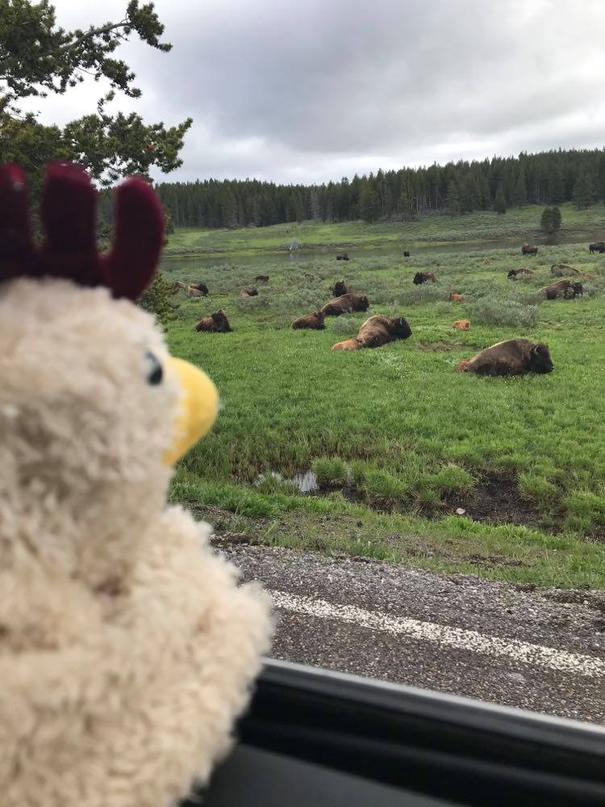
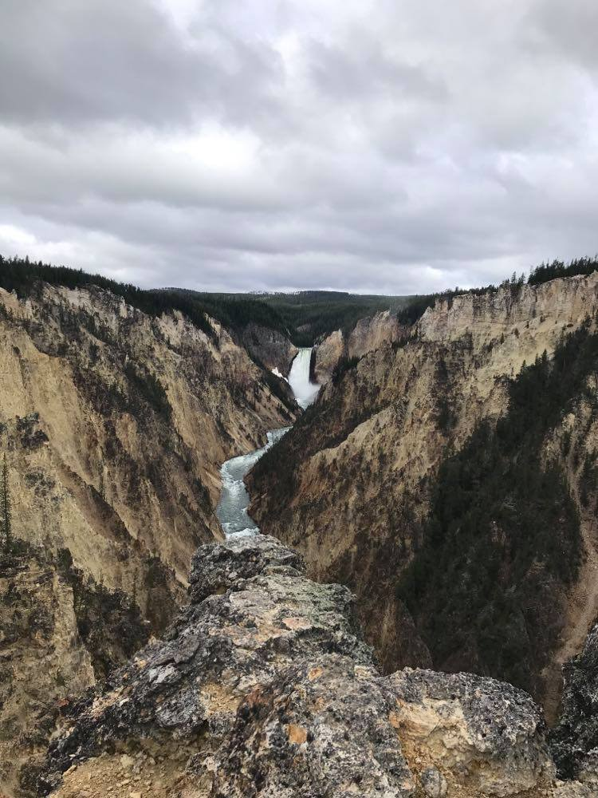
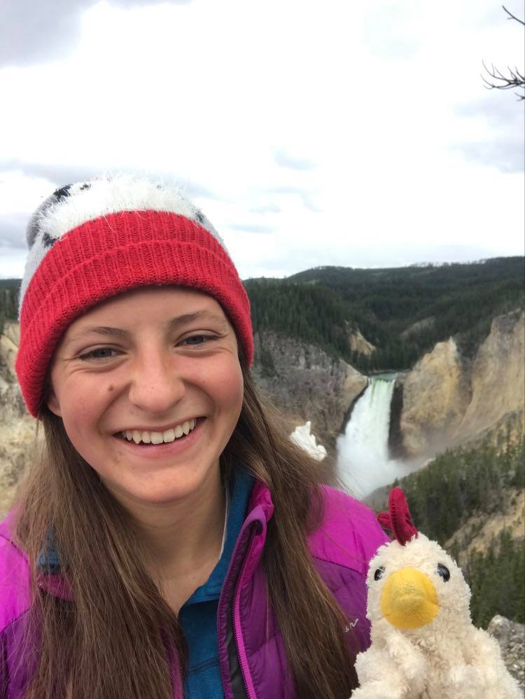
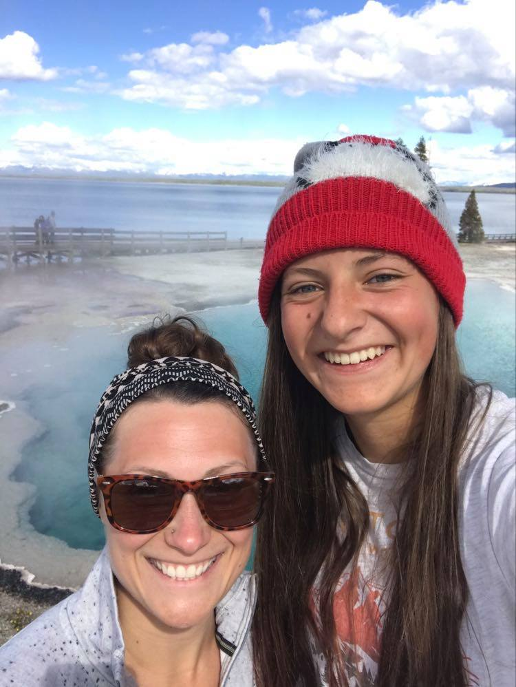

My Blog
I don't even know why I'm writing this because I'll just be able to tell you all about it. Bisons, and Elk, and Wolves Oh My!
I kind of dragged myself out of bed this morning and we ended up leaving an hour after we meant too. Turns out its a lot harder to get up when you sleep in a bunk bed and the first thing you have to do is carefully lower yourself to the ground. Because of my late sleeping I had my breakfast in the car and the dishes sat there all day encrusted in oatmeal. Thankfully when I had my hot cocoa this evening the coco cleaned it off and I got an extra something in my drink. Entering the park we were the first people through one of the lines and the guy was super cheerful. He asked if we wanted a park map/newspaper and I really don't think we should have turned him down because then we would have more kindling to start our fire retardant firewood.
It was an hour and a half drive to canyon and I spent the first half in a stupor. Driving by the West Thumb of Yellowstone Lake I noticed the Geyser basin which is not something I'd done before. It was really pretty watching the steam come off of the Geysers and into the water. Anyways case in point next time I do the polar plunge I know where I am going. We ran into a moose along the road but thankfully we were in the car and it was kind of chilln'. No I am still not over my trauma from monday even though 2 out of 3 Meese I have seen have just minded their own business. Before long we came out into a valley and this was the incredible part. First we ran into a few elk and then a few bison, but then we ran into all the bison. There were hundreds upon hundreds of them. There were a bunch of calfs which were really cute. There were also a few what we hope were sleeping bison but they may have been dead-who knows. To not scare the children I will say that they were asleep. After running into all the bison we then came across all the elk up in a field although they weren't right along the road. To continue this wildlife extravaganza we passed by two wolves going after some geese. Oddly enough afterwards Alana didn't seem as determined to go backcountry hiking. I'm still trying to figure out why.
We stopped at the mud pots and the dragon cave thing and as always as I sat there watching the cave belch smoke a very large part of me wanted to go in there although even if there wasn't a dragon I would still be incinerated which would have been really unfortunate. One of my favorite features in this pullout is actually the drainage hole that lets off a continuous cloud of steam which is super comforting to know that that is happening beneath your feet.
We drove out to the South Rim of the Grand Canyon of Yellowstone and me as her fantastic tour guide who has done nothing but misdirect and make mistakes led her to the wrong spot and I was really confused when we saw the upper falls and not the lower falls. We then went to Artist's point which was absolutely stunning but was getting crowded even as we left. We decided to do one hiking trail because it was 2 miles in total and out to Sublime Point. The hike itself skirted the canyon and was incredible. (not recommended for children under the age of 5) I dropped my phone several times and nearly had a heart attack as it teetered near the edge. This hike felt a lot longer than 1 mile out and when we finally made it Point Sublime was in the trees and you could barely see anything. I rechristened Point Mediocrity. We theorized because the trail had seemed so much longer that some sadistic park rangers had moved the ending. Going back we ran into several people who asked how much further and also a man with two four year old boys. I do not know why you would bring those to Yellowstone without at least a leash. We backtracked from here and were going to do Uncle Tom's trail which is like the stair case of doom with a nice view at the end. However, the trail was closed which may have saved Alana and I's friendship.
On the North Rim we again could not take the switch back laden trail to the rim of the falls because it was closed. Instead we did a series of overlooks and I worked to recreate a family photo we took last year that is one of my favorite pictures. Unfortunately my family was not there so the chicken had to do. Also unfortunately it took me several tries to remember where the right spot was. "I think it's here, oh wait that was the wrong spot." Thankfully I'm used to strange looks otherwise I may have been a little embarrassed. We did manage to do one hike down to an observation point but I'm not sure if the view was any better than it had been up above. The switchbacks kicked my butt and part of me was very glad that some of the things I'd wanted to do had been closed or I might still be at the bottom of the canyon. We went by Canyon village to buy sticker (me) and postcards (Alana). There was a grill there and for a moment we were super excited because we've both been craving french fries. Unfortunately they didn't sell just french fries and the line was super long so we got ice cream instead even though it was 50 degrees out. Hey 50 degrees starts to feel real good when it was 32 and snowing the day before. We took our icecream and ate it in the car because it was too cold to be outside.
The next part of the plan was to picnic at the Virginia Falls picnic area. What I didn't realize which really just makes me the worst tour guide is that to get to the picnic area was a one way scenic loop that apart from the waterfall which was really pretty wasn't all that scenic. Too make matters better the picnic area itself was at the edge of a field but our view was of a tree. It wasn't a bad spot but the National Park should really work on picnic areas. We were only there for about 10 minutes because Alana had been snacking all day and I'd scarfed my food down.
The second part of our day was too go to Norris which is the most out of this world geyser basin. I always feel like I'm in a different planet. The problem was that we both were going into comas and most of the basin we walked around half asleep. I also made her do the outer loop which I'd always wanted to do and so our stupor walk was prolonged. The sun did come out eventually and we shed a billion layers and probably looked pretty comical with everything tied around our waist. Steamboat geyser was acting up and we weren't sure if it was going to errupt because there were a ton of people just sitting there watching including a few park rangers. After about 15 minutes of sitting there and it still hadn't shot scalding water hundreds of feet in the air we decided to move on. To be fair it was shooting water 50 feet in the air which was neat. I do wonder though if people just stopped and started watching because they saw other people watching and it was kind of a tourist trap situation of if everyone's looking at something than there must be something to see. We then hopped in the car and continued our loop. We made it back to the car which was a feat considering that Alana parked literally in the farthest spot because it was the first one available. To be fair I do that everytime I go to the grocery store.
We drove back to Old Faithful because we had service there yesterday. Along the way I may or may not have told Alana that I wasn't sleeping and then passed out (whoops). There was very questionable service and about 1 in 2 of my texts went through and while I tried to upload it really didn't work. Case in point don't write a blog when you are going somewhere that has literally no service what so ever. (I'm talking about you Wyoming) We continued to drive back South and stopped at West Thumb Geyser basin which I don't think I'd ever been too. It was right along Lake Yellowstone and it was really beautiful. I know I've said that a lot but I have pictures and my brain isn't working well enough to paint a picture with my words. However, I made the mistake of going in my t-shirt and was a little chilly for most of the hike. I pulled a bison and just went and stood in the steam. The problem is when I left the steam I was wet and cold. Ahh well. I also now remember something that was along the North Rim of Grand Canyon of Yellowstone that is worth mentioning. They had a pull off and a sign called Glacial Boulder it was literally just a big rock that you could take a picture with a little ridiculous if you ask me. "That is a nice boulder!" Anyways fast fowards to driving back South. We snacked the rest of the way down and really didn't see much else.
Here is the most dissapointing part of my day. Because of how awesome the hot springs had been previously we decided to hit them up again this time with drinks. (I promise I had Coconut Water). When we got to the trail out there there were a lot of other cars so we thought we would hike to the further hot springs. We found them and while they were smaller the waterfall feature made up for it. There was also a snake in the pool and that might have freaked me out a little. But, before we could even enjoy a soak the swarm descended upon us. I have never seen masquitos so thick in my life. I could get 3-4 with a single smack on my arm. We doused ourselves in bug spray basically drinking it but it still wasn't good enough. We walked back over to the other hotsprings hoping it would be better. It wasn't and we left hastily. On our way out we ran into some Californians on their way in. The Pendleton they had might have helped but they probably didn't last well or their bloodless carcassess are now sitting in the hotsprings. Okay thats a little dark. They actually left right after we did. All in all it was pretty dissapointing but as a result both Alana and I showered yesterday which was probably for the good of humanity. My dinner this evening was really odd and for those backpackers out there I don't recommend the spicy chicken curry. It tastes like spicy apples and rice which really isn't the greatest taste.
One day someone will read this
-Claire